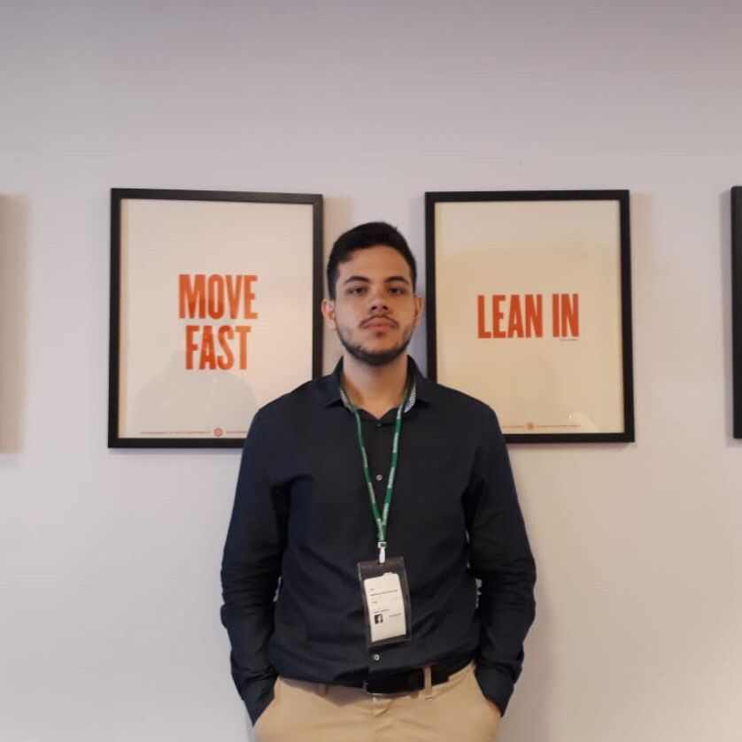

Hugo de Araújo
Hugo de Araújo
Graduação em Ciência de Dados
FGV - EMAp
hugoaraujo2911@gmail.com
João Victor Mendes
Graduação em Ciência de Dados
FGV - EMAp
j.victor8@hotmail.com
Marcéli Melchiors
Graduação em Matemática Aplicada
FGV - EMAp
marcelimelchiors12@gmail.com

Mateus Amaral
Graduação em Administração de Empresas
FGV - EBAPE
mateusamarral@gmail.com